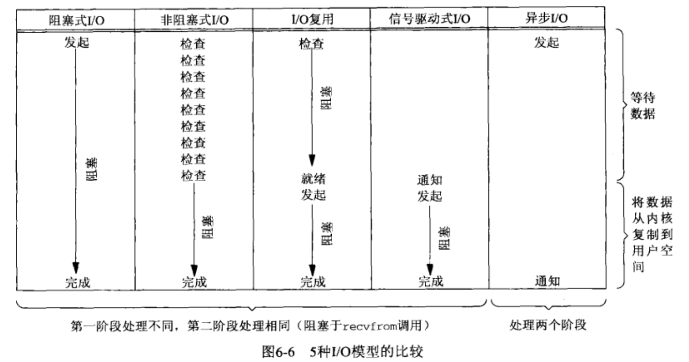

软件开发面试题整理
面试题汇总
C++
基础知识
C 和 CPP 区别是什么
| C | C++ | |
|---|---|---|
| 编程范式 | 面向过程 | 面向对象 |
| 函数重载 | 无 | 有 |
| 引用 | 无 | 有 |
C++编译过程
预处理：展开include和define
编译：转化为汇编代码
汇编：转化为二进制机器码
链接：将目标和其需要的库链接成可执行文件
指针和引用的区别
| 指针 | 引用 | |
|---|---|---|
| 内存空间 | 占用 | 不占用 |
| 是否可为空 | 可以 | 不可以，必须只指向存在的变量 |
| 修改指向 | 可以 | 不可以 |
其实引用在编译时作为const指针处理
C++ 内存分布

sizeof数组是多少，指针是多少
void test(int *a)
{
cout << "test: " << sizeof(a) << endl; // 8
}
int main()
{
int a[3];
cout << &a << endl; // 0x16fb9b28c
cout << a << endl; // 0x16fb9b28c
cout << sizeof(a) << endl; // 12 = 3 * 4
cout << sizeof(a[1]) << endl; // 4
cout << sizeof(&a) << endl; // 8
test(a);
return 0;
}数组名和指针的区别
对于数组名和指针是两个概念，但是对于a[3]来说a和&a的地址是一样的，数组名a代表的是整个数组，当dereference如a[1]时，数组名转化为指向首元素的指针，得出的值为*(a+1*sizeof(int))，另外在做右值时a也会转化为指向首元素的指针（参考）
面向对象
继承方法
C++ 重载和重写的区别
重载（Overloading）：重载是指在同一个作用域内，对一个函数或者运算符进行多次定义，每个定义有不同的参数列表或参数类型。通过重载，我们可以在同一个作用域内使用相同的函数名或运算符符号来执行不同的操作。
重写（Overriding）：重写是指在派生类中重新定义基类中已经存在的虚函数。重写后的函数与基类中的函数具有相同的函数名和参数列表，但是在派生类中的实现可以不同于基类中的实现。重写允许派生类覆盖基类的实现，以实现多态性。
多态的概念
不同的对象对于同一消息作出不同的响应。子类在继承父类后可以设计自己的版本，在运行时动态选择调用哪个版本实现
静态绑定和动态绑定
在面向对象编程中，静态绑定和动态绑定是两种不同的函数调用机制。
静态绑定（Static Binding），也称为早期绑定或编译期绑定，是指在程序编译时就将函数调用与函数实现绑定起来，而不考虑对象的实际类型。这种绑定是通过函数的名称和参数列表来实现的。在静态绑定中，编译器会在编译期间确定调用哪个函数，而不是在运行时确定。静态绑定通常适用于非虚函数的调用，因为非虚函数的调用是在编译期间就可以确定的。
动态绑定（Dynamic Binding），也称为晚期绑定或运行时绑定，是指在程序运行时根据对象的实际类型来决定调用哪个函数。这种绑定是通过虚函数来实现的。在动态绑定中，编译器会在运行时确定调用哪个函数，而不是在编译期间确定。动态绑定适用于需要实现多态性的情况，可以让基类指针或引用调用派生类中的函数实现，实现运行时多态性。
虚函数
作用
-
实现动态多态性（Runtime Polymorphism）：通过使用虚函数，可以在运行时动态地确定调用的是基类函数还是派生类函数，实现多态性。例如，如果我们有一个指向基类对象的指针，我们可以使用虚函数来调用派生类中的适当函数。
-
支持运行时类型识别（RTTI）：通过使用虚函数和类型信息（type information），可以在运行时确定对象的实际类型，从而实现更加灵活的代码设计。
-
简化代码维护：使用虚函数可以将代码的实现细节从类的使用者中分离出来，使得修改基类的实现对派生类的影响最小。
实现
类保存指向保存了所有虚函数指针的表（vtable）的指针（vptr），通过基类指针调用虚函数时访问vtable选择特定的函数指针调用
类中有一个虚函数大小是多少
为一个指针的大小
C++ 的友元
可以访问一个类的非公有成员的函数或类。作用是提高代码封装性，简化了一些实现
- 友元函数：该函数可以访问该类的私有成员和保护成员
- 友元类：该类可以访问该类的私有成员和保护成员
- 友元成员函数：该成员函数的私有成员和保护成员
空类包括什么成员
不包含任何成员，只是sizeof时为1，应为C++中每个对象大小必须大于0
悬空指针所指向的内存被释放了，那么这个指针还存在吗
存在，只是释放了指向的内容
浅拷贝和深拷贝有什么区别
浅拷贝为字节流的拷贝，对于指针来说，通过浅拷贝会使新对象和旧对象指向同一块内存（类默认的拷贝构造和拷贝赋值）
深拷贝在复制时为指针分配新的内存，新对象和旧对象有各自独立的空间
一个类的大小由什么决定
成员变量的个数，是否继承，是否有虚函数等，有虚函数的话，那么类就会多一个虚表指针，类的大小就会多8字节
一个子类继承空基类，对子类的大小会有影响吗 (空白基优化)
不会，基类大小的1优化成0
C++11
左值和右值引用
左值可以取地址、位于等号左边；而右值没法取地址，位于等号右边
使用std::move()可以将左值转化为右值，其在调用右值的拷贝时为浅拷贝，性能较深拷贝强。但作为右值被使用后，这个变量不应该再使用
悬空指针和野指针的区别
悬空指针为指针最初指向的内容已经被释放的指针
野指针是没初始化的指针
智能指针，循环引用会怎么样
内存泄漏
可以这样避免
class A
{
shared_ptr<B> p;
}
class B
{
weak_ptr<A> p;
}sharedptr 和weakptr使用场景
unique_ptr只允许基础指针的一个所有者shared_ptr采用引用计数的智能指针。 如果你想要将一个原始指针分配给多个所有者（例如，从容器返回了指针副本又想保留原始指针时），请使用该指针。 直至所有shared_ptr所有者超出了范围或放弃所有权，才会删除原始指针。 大小为两个指针；一个用于对象，另一个用于包含引用计数的共享控制块weak_ptr结合shared_ptr使用的特例智能指针。weak_ptr提供对一个或多个shared_ptr实例拥有的对象的访问，但不参与引用计数。 如果你想要观察某个对象但不需要其保持活动状态，请使用该实例。 在某些情况下，需要断开shared_ptr实例间的循环引用。
在A函数里用指针申请好空间后，这块空间需要返回给B函数，然后B函数使用后不再使用这块内存，虽然我们可以手动释放，但往往可能忘记释放，请问用什么方式解决？（智能指针解决）
A为shared pointer，B为A的weak pointer
智能指针的局限
智能指针不能用于指向栈上的对象或静态变量，因为这些对象的生命周期是由编译器控制的，不需要手动管理内存。 智能指针可能会对性能产生一定的开销，因为它们需要维护引用计数、析构器等信息
STL
map和set插入删除有啥区别
说一下迭代器失效的情况，以及解决方法
在C++ STL中，迭代器是一种指向容器中元素的对象，它提供了访问容器元素的能力，从而使得程序员可以对容器中的元素进行遍历、修改等操作。然而，在某些情况下，迭代器可能会失效，即不能继续使用。以下是一些常见的导致迭代器失效的情况：
- 容器大小发生改变
在使用迭代器遍历容器的过程中，如果容器的大小发生改变（如插入或删除元素），则迭代器可能会失效。此时，继续使用失效的迭代器会导致程序崩溃或产生不可预期的结果。
- 插入元素导致内存重新分配
对于一些容器（如vector、deque），在容器中插入元素时，可能会导致容器重新分配内存。如果此时使用了失效的迭代器，则可能会指向一个已被释放的内存地址，进而导致程序崩溃或产生不可预期的结果。
- 删除元素导致迭代器失效
在使用迭代器遍历容器的过程中，如果删除了容器中的元素，则可能导致迭代器失效。例如，对于vector容器，当使用erase()方法删除元素时，该元素之后的所有迭代器都会失效，因为它们指向的元素已经被删除。
为了避免迭代器失效，可以采取以下方法：
- 使用迭代器前先进行检查
在使用迭代器前，可以先检查容器中的元素是否发生了改变，从而避免使用失效的迭代器。例如，可以在循环遍历容器的时候，在每次循环前检查容器大小是否发生改变。
- 使用智能指针或引用
智能指针或引用是一种安全的访问容器中元素的方式，因为它们不会失效。在使用迭代器时，可以将它们转换为智能指针或引用，从而避免迭代器失效。
- 使用成员函数返回值
对于某些容器（如vector、deque），它们的成员函数返回值本身就是迭代器，而且使用这些函数返回的迭代器不会失效。例如，使用vector的begin()和end()方法返回的迭代器可以安全地用于遍历容器，即使在容器中插入或删除元素时也不会失效。
函数返回引用类型和普通类型有什么区别
函数返回引用类型和普通类型的最大区别在于，返回引用类型的函数可以返回一个左值，而返回普通类型的函数只能返回一个右值。
当一个函数返回引用类型时，返回值实际上是对一个对象的引用。如果这个对象是一个变量，那么这个函数返回的就是这个变量的引用，也就是一个左值。在这种情况下，返回值可以被用作左值进行赋值或修改。
如果设计一个string类，头文件应该怎样设计？写头文件就行了。列举出需要哪些函数
#ifndef MY_STRING_H
#define MY_STRING_H
#include <iostream>
class my_string {
public:
// 构造函数
my_string();
my_string(const char* str);
my_string(const my_string& other);
// 析构函数
~my_string();
// 赋值运算符
my_string& operator=(const my_string& other);
// 下标运算符
char& operator[](size_t index);
const char& operator[](size_t index) const;
// 字符串拼接运算符
my_string operator+(const my_string& other) const;
// 字符串比较运算符
bool operator==(const my_string& other) const;
bool operator!=(const my_string& other) const;
bool operator<(const my_string& other) const;
bool operator<=(const my_string& other) const;
bool operator>(const my_string& other) const;
bool operator>=(const my_string& other) const;
// 字符串长度函数
size_t length() const;
// 字符串查找函数
size_t find(const my_string& str, size_t pos = 0) const;
// 字符串截取函数
my_string substr(size_t pos = 0, size_t len = npos) const;
private:
char* data_; // 存储字符串的动态数组
size_t size_; // 字符串的长度
size_t capacity_; // 存储字符串的动态数组的容量
static const size_t npos = -1; // 无效位置的标志
};
#endif // MY_STRING_H
可以增加右值引用
my_string::my_string(my_string&& other) noexcept
: size_(other.size_), capacity_(other.capacity_), data_(other.data_) {
// 将原对象置为空
other.size_ = 0;
other.capacity_ = 0;
other.data_ = nullptr;
}
my_string& my_string::operator=(my_string&& other) noexcept {
if (this != &other) {
// 释放当前对象的内存
delete[] data_;
// 将原对象的资源转移给当前对象
size_ = other.size_;
capacity_ = other.capacity_;
data_ = other.data_;
// 将原对象置为空
other.size_ = 0;
other.capacity_ = 0;
other.data_ = nullptr;
}
return *this;
}vector是什么？vector的底层实现？vector的扩容机制？
deque是什么？deque的底层实现？怎么实现O(1)头插？
map有几类？底层实现是什么？红黑树是什么？平衡树怎么实现平衡？
set和map的区别？
set和map的理解及使用场景
map和unordered_map的结构及使用场景
操作系统
内核态和用户态区别
操作系统中内核态和用户态是两种运行模式，区别如下：
- 权限不同：内核态具有更高的权限，可以执行所有的指令，包括访问系统资源、执行特权指令等，而用户态则只能执行受限的指令，不能直接访问系统资源。
- 执行环境不同：内核态运行在操作系统内核的上下文中，而用户态则运行在用户程序的上下文中。
- 系统调用：用户态程序如果需要访问系统资源或执行特权指令，需要通过系统调用的方式切换到内核态，由内核代表用户程序执行相应的操作。
- 中断处理：当硬件设备发生中断时，操作系统会切换到内核态进行中断处理，以保证系统正常运行。
线程间的同步方式
- 互斥锁（Mutex）：使用互斥锁可以保证同一时间只有一个线程可以访问共享资源。当一个线程获得互斥锁后，其他线程需要等待该线程释放锁后才能再次尝试获取锁。
- 信号量（Semaphore）：信号量是一个计数器，用于控制同时访问某个共享资源的线程数量。当某个线程需要访问共享资源时，它必须先获取信号量。如果当前信号量计数为0，则线程需要等待，直到有其他线程释放信号量。
- 条件变量（Condition Variable）：条件变量用于线程间的通信和同步，当一个线程需要等待某个条件满足时，可以使用条件变量来阻塞自己，等待其他线程发出通知。当条件满足时，其他线程可以发出信号通知等待的线程继续执行。
- 屏障（Barrier）：屏障用于控制多个线程在某个点上同步。当所有线程都到达这个点时，才能继续执行后面的代码。这种同步方式通常用于多个线程执行完某个任务后需要进行汇总的场景。
- 读写锁（Read-Write Lock）：读写锁用于在多线程环境下对共享资源进行读写操作的同步。读写锁分为读锁和写锁两种，多个线程可以同时获得读锁，但只能有一个线程获得写锁。这样可以在保证数据一致性的前提下提高并发性能。
进程间的通信方式
- 管道（Pipe）：管道是一种半双工的IPC机制，可以在两个进程之间传递数据。管道分为无名管道和命名管道两种，无名管道只能在具有亲缘关系的进程之间使用，而命名管道可以在不同进程之间使用。缺点：在没有读数据前不可以写数据
- 消息队列（Message Queue）：消息队列是一种基于队列的IPC机制，多个进程可以通过发送和接收消息来进行通信。消息队列具有一定的缓存能力，可以在进程之间传递不同大小的数据块。缺点：每个消息大小固定，队列大小受限，并且需要把消息从用户态拷贝到内核态
- 共享内存（Shared Memory）：共享内存是一种快速且高效的IPC机制，多个进程可以访问同一块物理内存，从而实现数据共享。共享内存需要使用信号量等同步机制来保证数据的一致性。
- 信号（Signal）：信号是一种异步通信机制，可以用于向进程发送通知。当一个进程接收到信号时，会执行相应的信号处理函数。常见的信号包括中断信号和软件信号等。
- 套接字（Socket）：套接字是一种通用的IPC机制，可以在不同的进程之间传递数据。套接字通常用于网络编程中，可以实现不同计算机之间的进程通信。
线程安全要加锁，什么情况可以不加锁?
线程安全是指在多线程环境下，对共享数据的访问操作不会出现冲突或竞争，从而保证程序的正确性和可靠性。为了实现线程安全，通常需要对共享数据的访问加锁。
然而，并非所有情况都需要对共享数据加锁，以下是一些情况：
- 只读访问：如果一个共享数据只会被读取而不会被修改，那么在多个线程同时访问时就不需要加锁。因为只读操作不会改变数据的值，所以多个线程同时读取同一个数据也不会出现冲突。
2.线程本地存储：有些数据只需要在一个线程内部使用，不需要在多个线程之间共享，那么就不需要对这些数据加锁。例如，每个线程都有一个独立的栈空间，线程内部的栈空间就是线程本地存储，不需要对其加锁。
3.不变对象：如果一个对象在创建后就不再被修改，那么多个线程同时访问它也不需要加锁。因为对象不会被修改，所以多个线程同时访问同一个对象也不会出现冲突。
需要注意的是，虽然上述情况下不需要加锁，但仍然需要保证数据的可见性。为了保证数据的可见性，可以使用volatile关键字或者synchronized块来同步内存中的数据
死锁（怎么预防）
破坏“请求与保持”：一次性申请进程所需的所有资源
破坏“循环等待”：资源按顺序申请（其实达不到，没法预测程序走的分支）
死锁避免（拒绝某些资源请求）
每次申请资源都要判断是否出现死锁的危险，如果有危险就拒绝这次请求
通过银行家算法计算安全序列，充分性算法，完全避免死锁
算法优先分配给能满足进程所需最大资源量的进程，一次分配所有所需要的所有资源
死锁检测/恢复（排查因资源导致的阻塞进程）
检测发生死锁的进程（资源未被使用，进程长时间未调度等），恢复进程并重新分配资源（改进的银行家算法）
改进的银行家算法分配每次进程请求的资源，而不是分配所需的所有资源，因为有事进程对于资源使用后就会释放，这样系统有更多余量
虚拟内存和物理内存的关系
虚拟内存将硬盘上的一部分空间映射到了物理内存中，通过地址映射实现虚拟内存和物理内存的交互。当应用程序需要访问某个地址时，操作系统先检查该地址是否在物理内存中，如果不在物理内存中，则从虚拟内存中将该地址所对应的数据读取到物理内存中。当物理内存中的空间不足时，操作系统会将一些较少使用的数据换出到硬盘上，以释放物理内存空间供其他程序使用。
在4G物理内存机器上申请8G内存
在 32 位操作系统，因为进程理论上最大能申请 3 GB 大小的虚拟内存，所以直接申请 8G 内存，会申请失败。
在 64位 位操作系统，因为进程理论上最大能申请 128 TB 大小的虚拟内存，即使物理内存只有 4GB，申请 8G 内存也是没问题（申请只是分配虚拟内存，只有访问时才会调用缺页中断分配物理内存），因为申请的内存是虚拟内存。如果这块虚拟内存被访问了，要看系统有没有 Swap 分区：
- 如果没有 Swap 分区，因为物理空间不够，进程会被操作系统杀掉，原因是 OOM（内存溢出）；
- 如果有 Swap 分区，即使物理内存只有 4GB，程序也能正常使用 8GB 的内存，进程可以正常运行；
函数调用对内存的使用
- 所需参数压栈
- 返回地址压栈
- 被调用函数局部变量压栈
- 被调用函数局部变量出栈
- 返回地址出栈
- 所需参数出栈
实际1，2不同的编译器和语言有差异，另外参数也可以通过寄存器传
从磁盘预读的数据可能最后没有用到，有什么改善方法（预读污染）；批量读数据时可能会把热点数据挤出，有什么改善方法（缓存污染）
传统的 LRU 算法无法避免下面这两个问题：
- 预读失效导致缓存命中率下降；
- 缓存污染导致缓存命中率下降；
为了避免「预读失效」造成的影响，Linux 和 MySQL 对传统的 LRU 链表做了改进：
- Linux 操作系统实现两个了 LRU 链表：活跃 LRU 链表（active list）和非活跃 LRU 链表（inactive list）。
- MySQL Innodb 存储引擎是在一个 LRU 链表上划分来 2 个区域：young 区域 和 old 区域。
但是如果还是使用「只要数据被访问一次，就将数据加入到活跃 LRU 链表头部（或者 young 区域）」这种方式的话，那么还存在缓存污染的问题。
为了避免「缓存污染」造成的影响，Linux 操作系统和 MySQL Innodb 存储引擎分别提高了升级为热点数据的门槛：
-
Linux 操作系统：在内存页被访问第二次的时候，才将页从 inactive list 升级到 active list 里。
-
MySQL Innodb：在内存页被访问第二次的时候，并不会马上将该页从 old 区域升级到 young 区域，因为还要进行
停留在 old 区域的时间判断
- 如果第二次的访问时间与第一次访问的时间在 1 秒内（默认值），那么该页就不会被从 old 区域升级到 young 区域；
- 如果第二次的访问时间与第一次访问的时间超过 1 秒，那么该页就会从 old 区域升级到 young 区域；
通过提高了进入 active list （或者 young 区域）的门槛后，就很好了避免缓存污染带来的影响。
五大 IO 模型
- 阻塞 I/O (Blocking I/O)
在阻塞 I/O 中，当用户线程发起一个 I/O 操作时，线程会一直阻塞等待，直到内核完成 I/O 操作并将结果返回给用户线程。这种模型非常简单易懂，但是效率很低，因为当一个线程阻塞等待 I/O 完成时，CPU 时间无法充分利用，这会导致程序的性能受到严重影响。
- 非阻塞 I/O (Non-blocking I/O)
在非阻塞 I/O 中，用户线程发起一个 I/O 操作后并不会阻塞，而是立即返回，然后线程不断地轮询该操作是否完成。这种模型比阻塞 I/O 的效率高，但是也会导致 CPU 占用率过高，因为线程需要不断地轮询操作状态，浪费了大量的 CPU 资源。
- I/O 多路复用 (I/O Multiplexing)
I/O 多路复用可以监视多个文件描述符（sockets、标准输入输出、套接字等等）的可读可写等状态，当任何一个文件描述符就绪（可读或可写）时，就能够通知相应的线程进行读写操作。这种模型使用 select、poll、epoll 等多路复用技术，可以有效地避免线程阻塞等待 I/O 完成的问题，提高程序的并发处理能力。
- 信号驱动 I/O (Signal-driven I/O)
信号驱动 I/O 使用信号机制通知用户线程 I/O 操作已经完成。在这种模型中，当用户线程发起 I/O 操作后，内核会立即返回并允许线程继续执行其他任务。当 I/O 操作完成后，内核会向用户线程发送一个信号来通知操作已经完成，然后线程可以调用相应的系统调用来读取数据。信号驱动 I/O 可以避免线程阻塞等待 I/O 完成的问题，但是也会导致一些其他问题，例如信号可能会被其他程序捕获，使得程序难以控制。
- 异步 I/O (Asynchronous I/O)
异步 I/O 中，用户线程发起 I/O 操作后，内核会立即返回并允许线程继续执行其他任务。当 I/O 操作完成后，内核会向用户线程发送一个通知来告诉它操作已经完成，然后线程可以调用相应的系统调用来读取数据。异步 I/O 模型可以避免线程阻塞等待 I/O 完成的问题，并且可以自动处理 I/O 缓冲区的数据传输
| IO 模型 | 第一阶段 | 第二阶段 |
|---|---|---|
| 阻塞式IO | 阻塞 | 阻塞 |
| 非阻塞式IO | 非阻塞 | 阻塞 |
| IO多路复用 | 阻塞（Select） | 阻塞 |
| 信号驱动式IO | 异步 | 阻塞 |
| 异步IO | 异步 | 异步 |

计算机网络
TCP 三次握手
步骤为：
- client传给server自己的SYN c
- server传给client自己的SYN s，对于server SYN的确认ACK c+1表示下个要接收的数据包序号
- client传给server对于server SYN的确认ACK s+1
为什么不是2次？
防止历史连接的建立，造成资源浪费，而且无法可靠同步双方序号
如果有一个历史连接到达server，对于两次连接server会立即分配资源，把ack c+1传给client，但是client比对下不是自己需要建立的连接，会拒绝请求，把RST发给server。相当于server白申请资源
TCP与UDP区别
| TCP | UDP | |
|---|---|---|
| 建立连接 | 有 | 无 |
| 流量控制 | 有 | 无 |
| 拥塞控制 | 有 | 无 |
| 有序 | 有 | 无 |
Tcp和Udp使用场景
由于 TCP 是面向连接，能保证数据的可靠性交付，因此经常用于：
FTP文件传输；- HTTP / HTTPS；
由于 UDP 面向无连接，它可以随时发送数据，再加上 UDP 本身的处理既简单又高效，因此经常用于：
- 包总量较少的通信，如
DNS、SNMP等； - 视频、音频等多媒体通信；
- 广播通信
流量控制和拥塞控制
Get和Post
| Get | Post | |
|---|---|---|
| 可被缓存 | 可以，浏览器或者server可以换讯 | 不可以 |
| 参数传递方式 | url里 | body里 |
| 应用场景 | 数据的请求，查询，搜索 | 提交数据，上传文件 |
| 请求大小 | 几KB到几百KB | 理论上没限制 |
HTTP和HTTPS
| Http | Https | |
|---|---|---|
| 安全性 | 明文传输 | 采用SSL/TLS协议对数据加密 |
| 传输方式 | TCP | SSL/TLS |
| 默认段口号 | 80 | 443 |
url解析
- 访问缓存，包括浏览器，操作系统缓存，hosts，本地域名服务器
- 通过本地域名服务器访问根DNS服务器获得对应顶级DNS服务器的地址
- 通过本地域名服务器访问顶级DNS服务器获得对应权威DNS服务器的地址
- 通过本地域名服务器访问权威DNS服务器获得ip
- 本地域名服务器将ip返回给主机
http1.1和http2
HTTP/1.1和HTTP/2是两个不同的HTTP协议版本，下面是它们之间的一些主要差别：
- 多路复用：HTTP/1.1协议使用串行化的方式在一个TCP连接上依次传输多个HTTP请求和响应，这样会产生一些性能瓶颈。而HTTP/2协议则使用多路复用的方式，通过在同一个TCP连接上并行传输多个HTTP请求和响应，提高了性能和效率。
- 头部压缩：HTTP/1.1协议的请求和响应头部信息没有压缩，这样会占用较多的带宽和网络资源。而HTTP/2协议引入了头部压缩机制，可以有效地减少网络传输的数据量，提高性能和效率。
- 服务器推送：HTTP/1.1协议需要客户端发起每个请求，服务器无法主动推送内容给客户端。而HTTP/2协议允许服务器在客户端请求之前主动推送内容给客户端，可以减少客户端请求的次数和提高性能。
- 流量控制：HTTP/2协议引入了流量控制机制，可以对每个流进行流量控制，避免网络拥塞和资源竞争。而HTTP/1.1协议没有流量控制机制，容易导致网络拥塞和性能瓶颈。
- 请求优先级：HTTP/2协议允许客户端设置请求的优先级，可以确保高优先级的请求优先得到响应，提高性能和效率。而HTTP/1.1协议没有请求优先级机制，容易导致低优先级的请求得不到及时响应。
数据库
什么情况下建立索引
- 频繁使用的列：对于经常用于 WHERE 子句或 JOIN 子句中的列，可以考虑创建索引，以便更快地查询这些数据。
- 唯一性约束：对于需要唯一性约束的列，例如主键或唯一索引，需要创建索引来确保数据的唯一性。
- 外键约束：对于外键约束，也需要在相关的列上创建索引以提高查询性能。
- 多表连接：当进行多表连接时，可以在涉及到的列上创建索引，以提高查询性能。
- 经常使用的排序列：对于经常用于排序操作的列，可以创建索引，以提高排序的性能
MySQL 存储引擎有哪些
RPC
protobuf，它和 JSON 的区别是什么，为什么使用它
- 性能：由于 Protobuf 的大小和速度优势，它非常适合在网络上发送大量数据的情况。例如，如果您正在构建一个需要大量数据传输的分布式系统，那么 Protobuf 可能比 JSON 更好。
- 类型定义：Protobuf 的类型定义可以强制执行消息格式的正确性，这可以帮助您在发送和接收消息时避免错误。
- 兼容性：Protobuf 具有跨平台兼容性，并且提供了各种语言的支持库。因此，如果您正在构建一个需要跨多种编程语言进行通信的系统，那么 Protobuf 可能比 JSON 更好。
- 可扩展性：由于 Protobuf 可以定义任意数量的字段和消息类型，因此它非常适合在以后需要添加或更改消息格式的情况下使用。与 JSON 相比，Protobuf 更易于维护和扩展。
RPC 协议和 HTTP 协议的区别和特点
RPC（Remote Procedure Call，远程过程调用）协议和 HTTP（Hypertext Transfer Protocol，超文本传输协议）协议是两种不同的网络通信协议，它们的区别和特点如下：
- 通信方式
RPC 协议和 HTTP 协议的通信方式不同。RPC 协议是基于函数调用的方式进行通信的，客户端通过调用远程服务端暴露的 API 接口，实现远程过程调用。HTTP 协议则是基于请求-响应的方式进行通信的，客户端通过向服务器发送 HTTP 请求，并接收服务器返回的 HTTP 响应来进行通信。
- 传输协议
RPC 协议和 HTTP 协议使用的传输协议也不同。RPC 协议通常使用二进制协议进行传输，如 Protobuf、Thrift 等，以提高传输效率和可靠性。而 HTTP 协议则通常使用文本协议进行传输，如 JSON、XML 等。在一些特殊情况下，也可以使用二进制协议，如 HTTP/2 协议中的二进制帧。
- 请求方式
RPC 协议和 HTTP 协议的请求方式也不同。RPC 协议通常使用不同的 RPC 方法来表示不同的请求类型，如 gRPC 中使用的 RPC 方法名。而 HTTP 协议则使用不同的 HTTP 方法来表示不同的请求类型，如 GET、POST、PUT、DELETE 等。
- 性能和效率
RPC 协议和 HTTP 协议在性能和效率上也有一定的区别。由于 RPC 协议使用二进制协议进行传输，相对于 HTTP 协议使用文本协议进行传输，它在传输效率和带宽利用率上具有优势。同时，RPC 协议也更加灵活和高效，可以根据不同的应用场景进行优化。然而，HTTP 协议作为一种通用协议，在跨平台、跨语言、跨网络等方面具有优势。
- 应用场景
RPC 协议和 HTTP 协议适用于不同的应用场景。RPC 协议通常用于高性能、大规模分布式系统的通信，如微服务架构、数据中心内部通信等。而 HTTP 协议则更适用于 Web 应用和客户端-服务器模式的通信，如浏览器和服务器之间的通信、RESTful API 等。
总之，RPC 协议和 HTTP 协议都有各自的优点和局限性，在实际应用中需要根据具体的应用场景和需求来选择适合的协议。
浏览器较少支持grpc对http2原语的较低级别的访问，需要通过grpc-web做代理
GRPC通信流程
gRPC 通信流程一般包括以下几个步骤：
- 编写
.proto文件定义服务接口：首先需要使用 Protocol Buffers 定义接口和消息格式，将接口定义保存在.proto文件中。 - 生成客户端和服务端代码：使用 Protocol Buffers 编译器
protoc将.proto文件编译为客户端和服务端所需要的代码。 - 启动服务端：服务端通过监听指定的端口，等待客户端的连接请求。
- 客户端发起调用请求：客户端使用生成的 SDK 中提供的 stub 函数调用服务端提供的方法，并将请求参数传递给服务端。
- 服务端处理请求并返回响应：服务端接收到客户端的请求后，根据请求参数执行对应的逻辑，并将处理结果封装为响应对象返回给客户端。
- 客户端接收响应并处理：客户端接收到服务端的响应后，根据响应参数执行对应的逻辑，完成一次 RPC 调用。
设计模式
单例模式
数据结构
B树
DFS
BFS
每个stl的初始化方法
分布式
线性一致，强一致，最终一致
强一致性要求分布式系统中的每个节点都保持同步，任何时刻都能够读取到最新的数据，并且每个节点读取到的数据都是相同的。换句话说，强一致性下，分布式系统中的所有节点都能够看到同样的数据，而且所有节点的数据都是最新的。这种一致性模型是最常见的一种，也是很多应用程序最基本的需求。
线性一致性是强一致性的一种特殊形式。它要求系统中的所有节点必须按照相同的顺序读取写入操作，而且这个顺序必须是全局有序的，也就是说，所有操作的顺序都是唯一确定的。这种模型通常用于需要有序的多节点事务，如交易系统等
假设有一个分布式系统，里面有三个节点：节点A、节点B、节点C。现在有一个操作需要在这三个节点上执行，并且需要保证强一致或线性一致。
在强一致性模型下，这个操作必须在所有节点上同时执行，并且执行结果必须相同。例如，如果这个操作是将某个数据从0改成1，那么在所有节点上执行结束之后，这个数据必须在所有节点上都是1，否则操作失败。
在线性一致性模型下，这个操作可以在任意一个节点上执行，只要这个节点的执行结果被所有节点看到的时间都是一样的。例如，如果这个操作是将某个数据从0改成1，那么执行这个操作的节点可以是任意一个节点，只要在所有节点看到的时间上，这个数据从0改成1的时刻是一样的。这样可以保证所有节点最终看到的数据都是1，因此也保证了一致性。
总之，强一致性要求所有节点同时执行，而线性一致性只要求所有节点看到的结果是一样的，但是并不要求同时执行。
最终一致性（eventual consistency）是分布式系统中一种弱一致性模型，它的基本思想是在分布式系统中的数据更新不需要实时同步，而是通过异步的方式在不同的节点之间复制和传播数据，最终达到一致的状态。
在最终一致性模型中，数据的更新是通过消息传递的方式在不同的节点之间进行的，不同节点之间的消息传递可能存在延迟，也可能存在网络分区（network partition）等问题，这些都可能导致节点之间的数据不一致。但是，最终一致性模型保证在一定时间内，所有节点最终会达到一致的状态。
举个例子，假设有一个分布式缓存系统，其中有两个节点A和B，它们都缓存了某个数据。当客户端请求获取数据时，它可以从节点A或节点B中获取数据，因为它们都缓存了这个数据。如果在某个时刻，节点A更新了这个数据，那么节点B上缓存的数据就过期了，但是由于节点之间可能存在延迟等问题，客户端有可能在一段时间内还是从节点B获取到了旧数据。但是，随着时间的推移，节点B最终会从节点A获取到最新的数据，然后更新自己的缓存，最终达到一致的状态。
分布式准则
数据可靠性（Reliability）
- 复制技术（Replication）：将数据复制到多个不同节点
- 纠删码技术（Erasure Code）：通过校验数据来保证数据可靠性的技术
数据一致性（Consistency）
设备故障和容错（Fault Tolerance）
数据库
数据库索引失效
6 种会发生索引失效的情况：
- 当我们使用左或者左右模糊匹配的时候，也就是
like %xx或者like %xx%这两种方式都会造成索引失效； - 当我们在查询条件中对索引列使用函数，就会导致索引失效。
- 当我们在查询条件中对索引列进行表达式计算，也是无法走索引的。
- MySQL 在遇到字符串和数字比较的时候，会自动把字符串转为数字，然后再进行比较。如果字符串是索引列，而条件语句中的输入参数是数字的话，那么索引列会发生隐式类型转换，由于隐式类型转换是通过 CAST 函数实现的，等同于对索引列使用了函数，所以就会导致索引失效。
- 联合索引要能正确使用需要遵循最左匹配原则，也就是按照最左优先的方式进行索引的匹配，否则就会导致索引失效。
- 在 WHERE 子句中，如果在 OR 前的条件列是索引列，而在 OR 后的条件列不是索引列，那么索引会失效。
工作项目
回归测试
流程
- 指定发布版本运行回归
- 评估指标结果，对于基础指标如是否到达，是否碰撞需一一排查；其他指标优先级不高只做报警处理（因为随机性较大），若所有场景的某一指标都有异常变化则需要排查（震荡幅度，运行时间等）
- 记录反馈回归结果，与其他模块测试沟通，通过则发灰度版本；否则联系负责人修复
场景库
覆盖基础场景和corner case。按场景细分为不同型号车辆，车道环境，障碍物，自车朝向；根据项目细分为绕障，借道等
来源手动构造，每周接管，数据挖掘抽取
性能测试
流程
- 通过单帧或多帧运行场景，期间监控相关进程的资源占用
- 和历史值对比，查看是否合理，反馈问题或者调整阈值
监控项
cpu_times：单位时间内CPU 在执行程序时所花费的时间，包括user，kernal，none
IO rchar/wchar：io吞吐量
Physical/Virtual Memory_peak：物理/虚拟内存峰值
GPU_memory_used，GPU_util：显存占用，gpu使用率
功能测试
流程
- 更新的优化点和风险点的理解与讨论
- 测试用例集的构建
- 评估指标的设计
- 具体算法问题追踪
- 上线流程的把握
- 上线后的更新点持续跟踪
RAFT项目
流程实现
raft通信流程
leader election